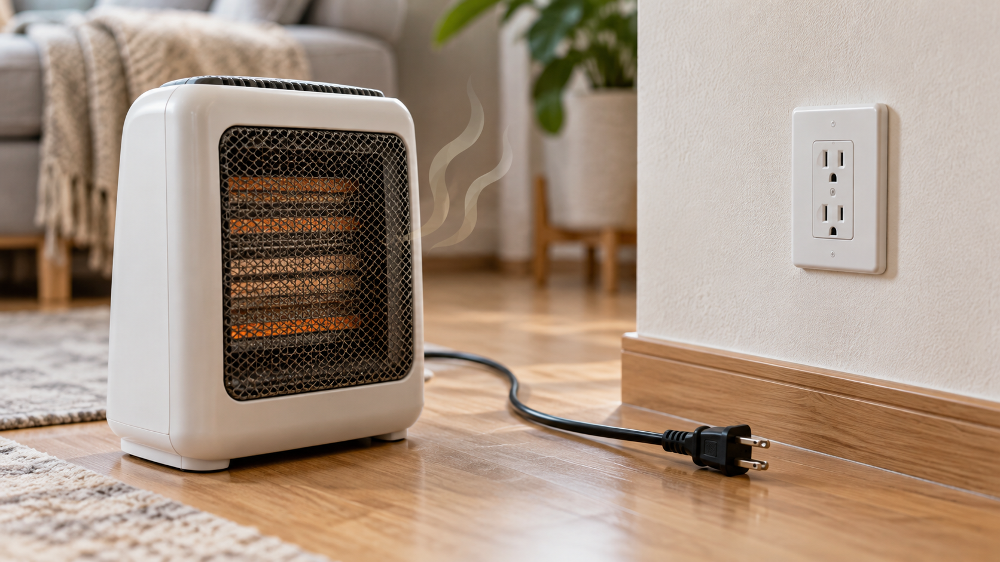

전기히터를 처음 켰을 때 잠깐 나는 먼지 냄새는 환기 후 사라질 수 있지만, 플라스틱 타는 냄새·연기·스파크·뜨거운 플러그가 동반되면 즉시 전원을 끄고 플러그를 뽑아야 합니다. 냄새가 계속되는데 고온 운전으로 확인하는 것은 위험합니다.
하나라도 해당하면 재사용하지 말고 제품과 콘센트를 함께 점검받으세요.
장기간 보관 후 처음 켰고, 연기·변색 없이 약한 먼지 냄새가 짧게 난다면 전원을 끈 상태에서 흡입구와 안전망의 먼지를 제거한 뒤 환기하며 짧게 시험합니다. 물이나 세정제를 발열부에 직접 뿌리지 마세요.
냄새가 시작된 시간, 사용 단계, 콘센트 위치, 차단기 작동 여부, 변색 사진을 남기세요. 분해하거나 내부 퓨즈를 임의 교체하지 않습니다. 전원이 켜지지 않는 문제는 전기히터 전원 불량 점검 순서와 함께 확인하세요.
한국전기안전공사와 제품 사용설명서의 난방기 안전거리를 우선 따르세요.